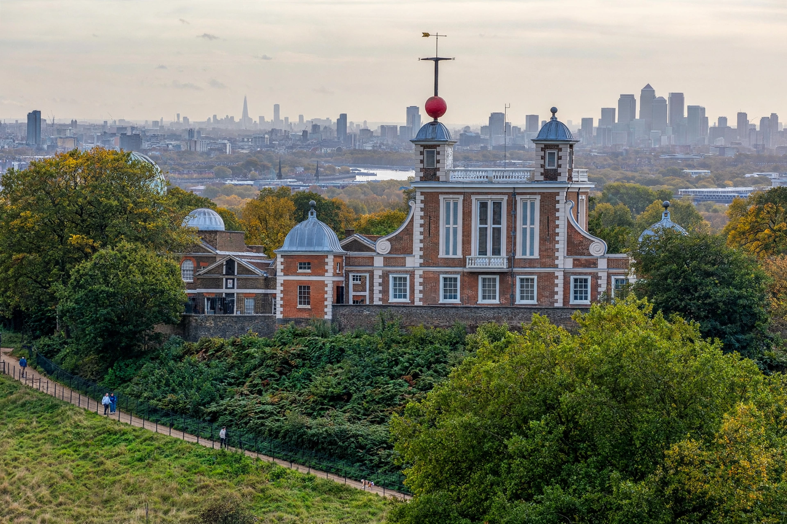

Wikipedia — the free encyclopedia
| Founded | 1675, by Charles II |
| First Astronomer Royal | John Flamsteed |
| Location | Greenwich Park, London |
| Known for | Prime meridian; Greenwich Mean Time |

Flamsteed House, the original Royal Observatory building, with the red time ball on its turret.
The Royal Observatory, Greenwich, is a historic observatory on a hill in Greenwich Park, London, overlooking the River Thames. Founded by Charles II in 1675 'to find out the so-much-desired longitude of places', it appointed John Flamsteed as the first Astronomer Royal, and Christopher Wren designed its first building, Flamsteed House.
For over three centuries the Observatory was the working centre of British astronomy, timekeeping and navigation: it published the Nautical Almanac from 1767, originated the prime meridian adopted by the world in 1884, and defined Greenwich Mean Time.
From 1833 the Observatory's red time ball — among the world's first public time signals — has dropped daily at 13:00 so that ships on the Thames could rate their chronometers. John Harrison's great sea clocks are displayed in its galleries today.
Light pollution and cramped conditions drove the working observatory away to Herstmonceux and then Cambridge in the twentieth century; the Greenwich site is now a museum, its courtyard crossed by the brass line of the prime meridian.
Prime meridian (Greenwich) · Greenwich Mean Time · John Harrison · Greenwich